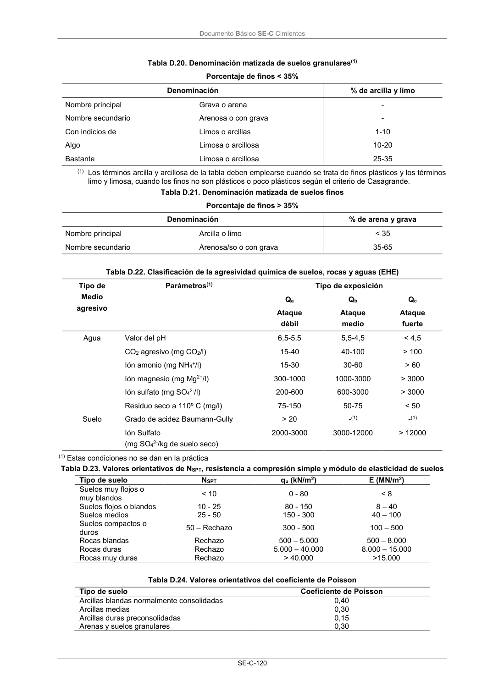

DB-SE-C · Página 125 · versión 2019-12-20
SHA256: a71133f4b0dca253e45ea3071c70f2a512354bcc5cd841bf89b1a502f567ac5e · página física 125 de 165 · métodos de encabezado
solo si están cotejados.
Documento · ← p. 124 · p. 126 →
Formatos: Markdown · JSON de bloques · PDF p. 125 · imagen PNG
Documento Básico SE-C Cimientos SE-C-120 Tabla D.20. Denominación matizada de suelos granulares(1) Porcentaje de finos < 35% Denominación % de arcilla y limo Nombre principal Grava o arena - Nombre secundario Arenosa o con grava - Con indicios de Limos o arcillas 1-10 Algo Limosa o arcillosa 10-20 Bastante Limosa o arcillosa 25-35 (1) Los términos arcilla y arcillosa de la tabla deben emplearse cuando se trata de finos plásticos y los términos limo y limosa, cuando los finos no son plásticos o poco plásticos según el criterio de Casagrande. Tabla D.21. Denominación matizada de suelos finos Porcentaje de finos > 35% Denominación % de arena y grava Nombre principal Arcilla o limo < 35 Nombre secundario Arenosa/so o con grava 35-65 Tabla D.22. Clasificación de la agresividad química de suelos, rocas y aguas (EHE) Tipo de Medio agresivo Parámetros(1) Tipo de exposición Qa Qb Qc Ataque débil Ataque medio Ataque fuerte Agua Valor del pH 6,5-5,5 5,5-4,5 < 4,5 CO2 agresivo (mg CO2/l) 15-40 40-100 > 100 Ión amonio (mg NH4+/l) 15-30 30-60 > 60 Ión magnesio (mg Mg2+/l) 300-1000 1000-3000 > 3000 Ión sulfato (mg SO42-/l) 200-600 600-3000 > 3000 Residuo seco a 110º C (mg/l) 75-150 50-75 < 50 Suelo Grado de acidez Baumann-Gully > 20 -(1) -(1) Ión Sulfato (mg SO42-/kg de suelo seco) 2000-3000 3000-12000 > 12000 (1) Estas condiciones no se dan en la práctica Tabla D.23. Valores orientativos de NSPT, resistencia a compresión simple y módulo de elasticidad de suelos Tipo de suelo NSPT qu (kN/m2) E (MN/m2) Suelos muy flojos o muy blandos < 10 0 - 80 < 8 Suelos flojos o blandos 10 - 25 80 - 150 8 – 40 Suelos medios 25 - 50 150 - 300 40 – 100 Suelos compactos o duros 50 – Rechazo 300 - 500 100 – 500 Rocas blandas Rechazo 500 – 5.000 500 – 8.000 Rocas duras Rechazo 5.000 – 40.000 8.000 – 15.000 Rocas muy duras Rechazo > 40.000 >15.000 Tabla D.24. Valores orientativos del coeficiente de Poisson Tipo de suelo Coeficiente de Poisson Arcillas blandas normalmente consolidadas 0,40 Arcillas medias 0,30 Arcillas duras preconsolidadas 0,15 Arenas y suelos granulares 0,30
